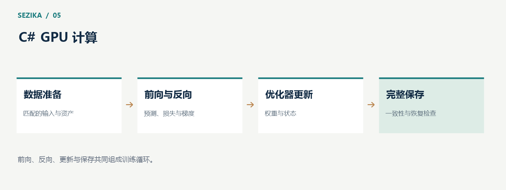

Sezika 的 GPU 计算：用 C# 实现推理与反向训练
Sezika 的 CUDA 路径通过 C# 编写 GPU 算子，在构建期生成 GPU 产物，并由静态驱动绑定执行。GPU 为模型计算提供并行能力，但从“能够运行”到“稳定、高效地运行”，需要同时处理数值、内存和执行调度。

模型最终落在一组数值算子上
编码器的计算由矩阵运算、注意力、softmax、归一化、激活、位置计算和数据索引等操作组成。推理需要前向计算；训练还需要梯度传播与优化器更新。
Sezika 自行实现这些 C# kernels，使用 CUDA Driver 管理设备、模块和执行。这样可以对算子逻辑和中间数据进行检查，同时也需要自己承担与成熟数值库相同类型的工程问题。
一个前向结果正确，并不能证明反向梯度正确。梯度正确，也不能证明长期训练稳定或吞吐具有优势。因此，推理、反向计算和训练性能必须分别验证。
CPU 与 GPU 是互补的路径
CPU 适合小规模参考、兼容性检查，以及一些短输入或低批量场景。GPU 则适合正式训练与大规模计算。
选择后端时，需要把模型加载、数据搬运和调度成本算进去。如果每次请求都重新加载权重，或为了很少的计算反复进行主机与设备之间的传输，GPU 的并行能力可能被其他开销抵消。
因此，性能比较应使用相同模型、输入、精度与任务条件。只比较某个孤立 kernel 的时间，难以说明真实应用的端到端延迟。
显存管理决定稳定性
权重、中间张量、梯度和优化器状态都会占用显存。训练通常需要比推理保存更多状态，输入长度也会影响工作空间。
Sezika 对资源预算和生命周期采用显式管理。GPU 缓冲区不能在仍有计算使用时释放，异步传输涉及的主机内存也需要持有到传输完成。取消请求时，应用要停止继续提交工作，并等待必要的完成边界，再回收资源。
这种管理方式让失败语义更清楚：显存不足、设备不可用或计算失败应作为错误返回，不能被包装成一个模型答案。

GPU 使用率不是有效吞吐
GPU 使用率可以帮助观察设备是否在执行计算，但它不是模型正确率，也不是完整的效率指标。一个训练过程可能在计算阶段很忙，却因保存状态、数据准备或同步等待而出现长时间空档。
对训练更有意义的指标，是在保持相同更新语义的前提下，每秒完成多少有效更新，以及完成目标任务需要多少时间和成本。对在线推理，则要关注端到端延迟、吞吐、排队与资源峰值。
Sezika 的训练观察中，状态保存和读回会影响连续计算。改善这些开销时，需要保证权重、优化器状态和数据位置来自同一个一致的保存点，不能为了减少等待而产生不可恢复的混合状态。
优化需要保持计算含义
矩阵运算可以研究分块、共享内存和工作空间复用；调度可以研究减少重复加载、有界预取和重叠传输。每一种优化都应先确认结果是否保持在允许的数值范围内，再测量代表性输入上的收益。
增加批量或使用多卡，也可能改变有效批次、梯度和优化器更新。它们属于训练方案的改变，不能只当作一个开关。当前采用的一条记录一次更新，需要与任何后续并行方案明确区分。
同样，显存有空余不意味着增加进程就能线性提速。实际收益取决于算子、同步、设备竞争和输入分布，需要实验支持。
当前已有基础与后续目标
Sezika 已执行真实的 C# CUDA 前向、反向与 FP32 AdamW 更新，并开展全参数训练和恢复验证。完整训练目前暂停，正式模型质量与最终部署性能仍需在后续完成。
项目追求的是可检查、可复现的本地计算路径。GPU 为这个目标提供算力，算子正确性、训练连续性与真实吞吐则决定它能否成为可靠的工程能力。
GPU 与 AOT 设计见 Sezika 项目文档，驱动接口可参阅 NVIDIA CUDA Driver API。